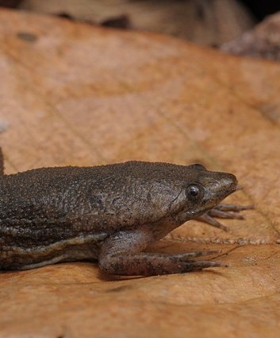

Sintomas do Sapo Pipa (Pipa pipa)
Seus sintomas podem levar a óbito
Humano
- Ataques de pânico
- Paranóia
- Problemas respiratórios
- Problemas cardiovasculares (Parada cardiorrespiratória)
- Convulsões
- Morte
Cão
- Salivação muito abundante, espuma branca e espessa começa a fluir da boca
- O cão não responde à sua voz, pode cambalear
- Possível vômito
- Fezes soltas
- Possível taquicardia e arritmia
- Fraqueza
- Convulsões são possíveis
Gato
- Aumento da pressão arterial
- Causa Fibrilação cardíaca
- Vômitos ou diarreia constantes
- Tosse e espirros
- Uma atitude triste, deprimida
- Excesso de saliva
- Treme, tem convulsões ou espasmos nos músculos
- Pupilas dilatadas
- Dificuldade para caminhar